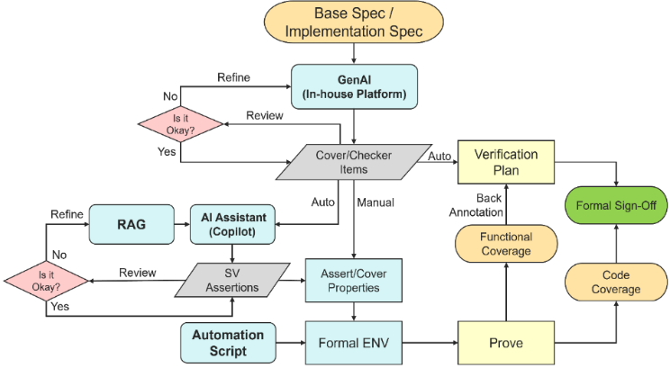
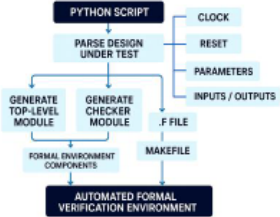
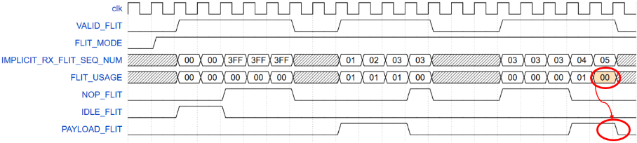

SIGMA：基于 GenAI 的形式验证方法化保障 Sign-off 智能流程
论文针对形式验证 sign-off 中验证计划提取、环境搭建与 SVA 编写高度依赖人工、耗时长且易漏检的问题，提出 GenAI 增强的 SIGMA 形式验证 sign-off 流程。该流程由三个组件构成：领域适配 LLM 从架构/微架构 spec 语义解析并分层生成 verification plan，Python 自动化脚本解析 DUT 的时钟/复位/参数/端口并自动生成 formal 环境（top module、checker module、.f 文件与 Makefile），Copilot 型 AI Assistant 以规则模板加 LLM 合成基础 SVA、以 RAG 检索设计上下文与历史断言辅助复杂属性精化，全程 human-in-the-loop。在 PCIe Sequence Number 握手状态机案例中，特征提取由约两周缩至三天（缩短 75%），环境搭建由约一周缩至两天，并发现 flit usage 字段误用的边界 bug；流程随后扩展到更多 PCIe 模块。论文声称该方法可推广到任意设计与其他协议族。
现有 Formal Verification Sign-off 流程中，从规格文档提取验证计划、搭建 formal 环境、编写 formal claims（SVA）等关键任务仍以手工完成为主，需要大量时间与专家经验，易引入人为错误、造成覆盖缺口并拉长验证周期。
提出三组件集成的 GenAI-Augmented FV Sign-Off Flow：(1) GenAI 平台用领域适配 LLM 解析架构与微架构规格，语义抽取验证特征并映射到 formal check 类别，生成可迭代的分层 verification plan，并将检查分为 basic（signal stability、protocol compliance）与 complex（multi-cycle dependencies、temporal ordering）；(2) in-house Python 自动化脚本解析 DUT 的 clock、reset、parameters、inputs/outputs，自动生成 top-level module、checker module、.f 文件与含 TCL 命令的 Makefile，支持多 IP 配置、可复现与 CI-based formal regressions；(3) Copilot 驱动的 AI Assistant 用规则模板与 LLM 合成基础 SVA，复杂检查通过 RAG 检索设计上下文、历史断言与规格片段辅助工程师精化。随后用 formal EDA 工具做穷尽证明与反例调试，并用 code coverage、stimuli coverage（functional reachability）、COI 与 Proof Core（checker completeness）以及回填 verification plan 的 functional coverage 生成 traceability 报告完成 sign-off。
验证计划特征提取：由人工约两周缩短至 3 天（GenAI LLM 平台完成），turnaround time 缩短 75%
Formal 环境自动生成：由人工约一周缩短至约 2 天
案例中发现真实 bug：Flit Mode 下 flit usage 字段为 00（协议保留给 NOP/IDLE 等控制 flit）时错误接收 payload flit，由边界条件触发的 corner-case
SVA 生成质量示例：AI 初版使用重叠蕴含 |-> 违反协议意图，人工修正为非重叠蕴含 |=> 并存入 RAG 后，助手可再生成语义正确的断言
SIGMA 流程从 Seq Num Sync SM 扩展到更多 PCIe 模块并给出实测时间线；作为对照的传统 FV 流程时间线基于 gate count 与 I/O count 相关性外推（非双流程实测）
区别于单点自动化工具，SIGMA 将领域适配 LLM 的 verification plan 抽取、Python 驱动的 formal 环境自动生成、Copilot 型 AI Assistant 的 SVA 生成与 RAG 反馈精化整合为覆盖 plan 提取—环境生成—断言生成—证明—覆盖率回填的端到端 sign-off 流程；强调 LLM 输出经 RAG 存储人工修正样本后迭代学习，并以 human-in-the-loop 评审与 traceability 覆盖率报告保证 sign-off 质量与传统流程等效。
相关度级别：high
命中能力域：2.5 形式验证与等效性检查 | 2.4 设计验证方法学 | 2.7 EDA/验证自动化与 AI 辅助
理由：论文直接命中团队三个核心能力域：2.5（formal property checking、协议合规形式化建模——案例即 PCIe 协议合规检查）、2.4（覆盖率驱动验证、回归与 CI、bug 分析——含 COI/Proof Core checker 完备性度量与覆盖率回填 verification plan）与 2.7（LLM/AI 辅助验证、Python 自动化框架、CI-based formal regressions）。团队交付 LPDDR/HBM4/UCIe 等协议 IP，协议 checker 编写、formal 环境搭建与 sign-off 覆盖率闭环是日常工程场景，论文的 verification plan 自动提取、环境自动生成与 SVA 自动生成可直接映射到 UCIe/LPDDR 协议的 formal 验证，且论文声称方法适用于任意设计与协议族。
建议动作：深入精读并做内部分享
SIGMA：利用生成式AI（GenAI）实现形式验证系统化保障的签核智能
R C Sanjay Krushnan，Cadence Design Systems，印度（rcsanjay@cadence.com） Moola Jeevan Chaitanya Goud，Cadence Design Systems，印度（jeevanm@cadence.com） Sakthivel Ramaiah，Cadence Design Systems，印度（sramaiah@cadence.com） Erik Seligman，Cadence Design Systems，美国（seligman@cadence.com）
摘要——形式验证通过穷举式的数学验证确保数字设计的功能正确性。然而，提取验证计划、搭建环境以及开发形式化断言（formal claims）等任务带来了重大挑战。这些任务需要大量的时间和专业知识，增加了遗漏检查项的风险，并降低了整体效率。本文提出了一种GenAI增强的形式验证签核（sign-off）流程，旨在解决这些瓶颈。所提出的解决方案集成了生成式AI、自动化脚本和Copilot组件，共同减少人工工作量并提升覆盖率。通过将验证过程中的关键步骤自动化，该流程提升了生产力，使工程师能够专注于复杂的验证任务，最终助力高效且高质量的IP开发。
随着数字系统的持续演进，确保其功能正确性已成为半导体设计中的一项关键挑战。形式验证（Formal Verification）提供了一种数学上严谨的方法来验证设计行为，能够提供传统基于仿真的方法往往缺乏的穷尽性覆盖。
生成式人工智能（Generative AI）与自动化工具的最新进展为简化验证流程带来了新的机遇。本工作提出了一种形式验证签核（Sign-Off）流程，该流程集成了三个由自动化驱动的组件：
通过将智能嵌入传统上由人工完成的任务中，所提出的流程提升了验证效率，使工程师能够专注于更高价值的分析。
在当前的形式验证签核流程中，若干关键任务仍由人工执行，这带来了人为错误的风险，并延长了验证周转时间——导致效率低下、验证工作量增加以及潜在的覆盖缺口。
该流程中的关键挑战包括：
这些局限性凸显了对一种自动化、智能化的形式验证流程的需求，该流程能够：(1) 从规格文档中准确推导验证计划，(2) 在最少用户输入的情况下自动生成形式验证环境，以及 (3) 加速针对标准检查的 SystemVerilog 断言（SVA）编写。这样的解决方案将提升验证覆盖率，并提高 IP 开发的整体生产力。
为了通过最大限度减少人工干预来提升形式验证签核（Formal Verification Sign-Off）的可靠性与效率，我们提出了一种生成式人工智能（GenAI）增强的形式验证签核流程，该流程集成了三个核心组件：GenAI、基于 Python 的自动化以及 Copilot。该架构旨在自动化形式验证过程中最耗时且最易出错的阶段，同时保持可追溯性、可配置性以及人在回路（human-in-the-loop）验证。

GenAI 平台采用领域适配的大语言模型（LLM）来解析架构级与微架构级规范。该平台执行语义分析以提取验证特性，并将其映射到形式检查类别。所提取的特性被组织为层次化的验证计划，并通过提示词调优与工程师反馈进行迭代优化。GenAI 还将检查分类为基础类别（例如信号稳定性、协议一致性）和复杂类别（例如多周期依赖、时序排序），从而支持下游自动化与优先级排序。
形式验证环境的搭建已通过一款内部自主开发的基于 Python 的自动化脚本得到精简。
该脚本能够智能解析被测设计（DUT），从中提取时钟、复位、参数、输入和输出等基本要素。利用这些提取到的数据，它会自动生成一个完整的形式验证环境，包括创建顶层模块、检查器模块、一个指定寄存器传输级（RTL）与形式验证环境组件路径的 *.f 文件，以及一个包含必要 TCL 命令的 Makefile。
该自动化流程确保了端口例化的准确性与绑定的正确性，减少了人工投入和人为错误。参数化脚本支持多种 IP 配置，并可与形式验证工具无缝集成。这种脚本驱动的流程

可加速环境搭建、保证一致性，并能在最少人工干预的情况下为多个 DUT 实现可扩展、可重复的形式验证。该方法尤其适用于拥有大量 I/O 接口的大规模项目，因为它将工作重心从环境搭建事务转移到了验证策略与覆盖率上，从而同时提升了生产效率与整体质量。此外，它还支持可复现性、更快速的环境创建以及基于持续集成（CI）的形式回归。
专有 AI 助手由 Copilot 驱动，可为验证计划中定义的所有基本检查自动生成 SystemVerilog 断言（SVA）。这些断言通过基于规则的模板和大语言模型（LLM）引导的综合方式生成。对于复杂检查，该流程引入了检索增强生成（Retrieval-Augmented Generation，RAG），通过检索相关的设计上下文、历史断言和规格片段，协助工程师完善或构建高级属性。这种混合方法在自动化与专家监督之间取得平衡，确保了正确性与完备性。
确保 AI 生成 SVA 可靠性的步骤：
完整的环境通过形式化 EDA 工具执行，利用穷尽的状态空间遍历来评估 SystemVerilog 断言（SVA）。每个属性都经过严格的形式化分析，以判定其可证明性或可证伪性。对于失败的断言，调试流程包括波形检查和反例追踪。根因分析与设计团队协同开展，以确保验证缺口得到解决并关闭。
验证完成后，使用形式化 EDA 工具进行代码覆盖率分析。功能可达性（Functional Reachability）通过激励覆盖率来度量。检查器完备性通过影响锥（Cone of Influence, COI）和证明核（Proof Core）来度量。在将覆盖率指标回注到验证计划之后进行功能覆盖率分析，以确保与预定义的验证目标保持一致。覆盖率指标被汇编成可追溯性报告，为形式化签核提供可供审计的文档，并以可量化的指标证明验证的完备性与正确性。
| Aspect | Traditional Sign-Off Flow | SIGMA Flow |
|---|---|---|
| Core Components | Manual processes, static checklists, engineer- driven | GenAI, automation scripts, Copilot components |
| Manual Effort | High; engineers manually manage sign-off steps | Reduced; automation handles critical steps |
| Coverage Improvement | Incremental, dependent on manual assertion and test creation | Enhanced through intelligent coverage analysis and GenAI suggestions |
| Productivity | Slower due to repetitive tasks and manual debug | Boosted by automation and intelligent assistance |
| Engineer Focus | Split between routine and complex tasks | Freed from routine tasks to focus on complex verification challenges |
| Verification Quality | Varies with team experience and effort | Consistently high due to methodical assurance and AI support |
| IP Development Impact | Longer cycles, delayed feedback | Efficient and high-quality IP development with early insights |
| Scalability Across Blocks | Requires manual adaptation and setup | Seamless deployment across blocks with reusable methodology |
| Outcome in Case Study | Baseline verification confidence | Facilitated Traditional flow, enabled left shift, adopted for future blocks |
| Aspect | Traditional Sign-Off Flow | SIGMA Flow |
为了验证 SIGMA 形式验证方法学的有效性，选取 PCIe 功能之一的序列号握手（Sequence Number Handshake）作为代表性设计。该模块分别采用传统的形式验证签核流程（Formal Verification Sign-Off Flow）和 SIGMA 流程进行了验证，从而能够直接比较验证效率、覆盖率以及整体有效性。
序列号同步状态机（Sequence Number Synchronization State Machine）确保在 PCIe 链路初始化与恢复过程中 flit 序列号的正确对齐。该状态机经历四个主要状态：IDLE（空闲，当链路断开或处于恢复状态时不进行 flit 交换）、IDLE Flit 握手阶段（IDLE Flit Handshake Phase，通过交换 IDLE flit 来建立链路就绪状态）、序列号握手阶段（Sequence Number Handshake Phase，使用显式 flit 同步序列号并更新 NEXT_TX_FLIT_SEQ_NUM），以及正常 flit 交换阶段（Normal Flit Exchange Phase，进行常规 flit 传输，同时执行序列号跟踪与错误检测）。该设计保证了协议一致性，支持错误处理，并在各种链路状态下维持数据完整性。
特征提取阶段通常需要约两周的人工投入，而借助由大语言模型（LLM）驱动的生成式人工智能（GenAI）平台，仅用三天便得以完成。这使周转时间缩短了 75%。LLM 实现了规格说明的自动解析与验证工件的生成，显著提升了形式验证规划流程的效率、一致性和可扩展性。
针对所提供的实现规格说明，制定形式验证策略，着重强调对协议级检查器和功能覆盖率项的系统性提取与定义。该策略必须详细阐述面向控制信号时序、数据完整性和协议符合性的验证检查器的构建方法，并覆盖所有运行场景。
| S.No | LLM Model | Completeness Score | Quality Score | Advantage | Examples |
|---|---|---|---|---|---|
| 1 | GEMINI | 80% | 90% | High accuracy; excels in hierarchical plan generation and complex check classification | IDLE State Entry Condition: Prove that the SM enters or remains in initial state when Link is down, or the link enters recovery. No Transmission : Prove that while in the initial state, no flits are transmitted. Exit Condition: Prove that if the SM is in initial state and ltssm enters L0 or Configuration.Idle or Recovery.Idle, the next state is IDLE FLIT Handshake PHASE. |
| 2 | GPT-OSS 120B | 75% | 80% | Moderate performance; suitable for general-purpose extraction tasks | Idle Transition If LTSSM enters L0 (or Configuration.Idle/Recovery.Idle) while in initial state, the SM moves to IDLE FLIT Handshake PHASE. IDLE Flit Exchange In IDLE FLIT Handshake PHASE, the transmitter must continuously send IDLE flits; any non-IDLE received flit is ignored. |
| 3 | Llama-3_3- nemotron- super-49b- v1_5 | 65% | 72% | Efficient parsing of specifications; good semantic analysis for basic checks | State Machine Transitions Entry to IDLE: Verify on Link is down or LTSSM recovery entry. IDLE to IDLE_FLIT_HS_PHASE: Verify transition occurs when LTSSM enters L0/Configuration.Idle/Recovery.Idle. |
| S.No | LLM Model | Completeness Score | Quality Score | Advantage | Examples |
注：上述由各种大语言模型（LLM）获得的结果均针对给定设计。然而，这些结果的质量与准确性可能因设计的功能与复杂程度而有所不同。
表III SVA对比
| 0 | 1 |
|---|---|
| Manual SVA | (state == IDLE && (link_state_rec_idle |
| AI Assistant SVA | (state == IDLE && (link_state_rec_idle |
| RAG Refined SVA | (state == IDLE && (link_state_rec_idle |
| 0 | 1 |
如表III所示，用于推导系统Verilog断言（SVA）的特性为：“当状态为IDLE且link_state_rec_idle或link_state_cfg_idle中任一信号被置为有效时，状态迁移至IDLE_FLIT_HS_PHASE。”
在AI辅助的SVA验证流程中，设计规格要求使用非交叠蕴含（|=>），以确保当link_state_rec_idle或link_state_cfg_idle中任一信号被置为有效时，状态从IDLE到IDLE_FLIT_HS_PHASE进行严格的周期迁移。最初，AI使用交叠蕴含（|->）生成了一条断言，允许同周期迁移，从而违背了协议意图。经人工修正的采用|=>的断言通过检索增强生成（RAG）进行了存储，使助手能够从反馈中学习，并重新生成具有准确语义的断言。这一改进与规格保持一致，并使验证得以成功完成。类似地，RAG还被用于管理广泛的场景，包括涉及$rose、$fell、自定义信号名称与取值的条件，以及该模块特有的其他复杂语法。
c) 自动化形式验证环境：它显著缩短了搭建时间——从大约一周的人工工作量缩短至两天左右——从而精简了验证流程并提升了整体效率。
在本案例研究中，同时采用传统形式验证流程和 SIGMA 流程进行了验证，以证明 SIGMA 能够提供同等的质量。这一目标通过人在回路（human-in-the-loop）的方式实现，即对 AI 辅助生成的结果进行了全面审查，以确保验证的完整性与稳健性。
Flit 类型误判：在 Flit 模式运行期间，当 flit usage 字段被设置为 00 时，错误地接收到了一个 payload flit，而该取值是保留给 NOP 或 IDLE 等控制 flit 使用的。根据协议规范，payload flit 必须伴随 flit usage 值 01，以表明有效的数据传输。该异常发生在由边界条件触发的极端场景（corner case）下，而正常运行流程未受影响。

The proposed GenAI-augmented formal verification flow demonstrated significant improvements in both productivity and verification quality in real-world PCIe IP. By automating key stages - Verification Plan extraction, formal environment setup, and SVA generation - the flow enabled a measurable left shift in the development cycle, accelerating project timelines and reducing manual overhead. While the results were demonstrated on a PCIe-based IP, the approach is also broadly applicable to any design
The flow manages design complexity by leveraging LLMs and RAG to interpret intricate specifications, autogenerating modular formal environments tailored to the DUT structure, and synthesizing context-aware SVAs that scale across multi-domain, parameterized, and hierarchical designs - ensuring correctness through formal validation and expert oversight.
Following the promising outcomes from the initial block case study, the AI-assisted verification methodology was systematically applied to additional blocks using a human-in-the-loop approach for detailed analysis. Final investigations and bug resolutions were completed by the Verification Lead and the Designer, ensuring protocol compliance and design integrity.
| TABLE IV FORMAL VERIFICATION TIMELINE.S. No | TABLE IV FORMAL VERIFICATION TIMELINE.Block | TABLE IV FORMAL VERIFICATION TIMELINE.Gate Count | TABLE IV FORMAL VERIFICATION TIMELINE.Pre-Project Estimation (Traditional) | TABLE IV FORMAL VERIFICATION TIMELINE.Effort(months) Traditional FV Sign-Off Flow (Post-Project Estimation) | TABLE IV FORMAL VERIFICATION TIMELINE.GenAI-Augmented FV Sign-Off Flow (SIGMA Flow) |
|---|---|---|---|---|---|
| 1 | SEQ NUM FSM | Low | 4 | 4 (Actual) | 3 |
| 2 | ACK/NAK SCHEDULER | High | 6 | 6 | 5 |
| 3 | TX RETRY BUFFER | Medium | 6 | 6 | 4.5 |
| 4 | DLLP DECODER | Low | 4 | 3 | 2 |
| 5 | DLP INSERT | Medium | 5 | 5 | 3.5 |
| TABLE IV FORMAL VERIFICATION TIMELINE.S. No | TABLE IV FORMAL VERIFICATION TIMELINE.Block | TABLE IV FORMAL VERIFICATION TIMELINE.Gate Count | TABLE IV FORMAL VERIFICATION TIMELINE.Pre-Project Estimation (Traditional) | TABLE IV FORMAL VERIFICATION TIMELINE.Effort(months) Traditional FV Sign-Off Flow (Post-Project Estimation) | TABLE IV FORMAL VERIFICATION TIMELINE.GenAI-Augmented FV Sign-Off Flow (SIGMA Flow) |
基于 Seq Num Sync SM 的结果，SIGMA 流程被扩展至更多 PCIe 模块。对于这些模块，所报告的 SIGMA 流程时间线对应于实际实施测量结果。相比之下，传统形式验证（FV）签核流程的时间线则是基于由 SIGMA 流程时间线推导出的门数与 I/O 数相关性进行外推估算的，因为采用等效的双流程验证方法将导致难以承受的验证时间。尽管如此，仍通过人在回路（human-in-the-loop）评审流程确保了完整的验证覆盖。
该流程在帮助初级形式验证工程师快速上手方面被证明非常有效。借助引导式自动化：
总体而言，该解决方案有助于缩短上市时间、降低验证成本并提升设计质量，验证了其作为一种可扩展且智能的形式验证签核方法学的有效性。
当前流程已能应对复杂性，由检索增强生成（RAG）管理高级检查。为进一步提升效率，我们正在开发断言之外的自动辅助代码生成技术，该技术最终将取代 AI Assistant，同时保持相同的工作流程和人工监督。
未来的增强工作将聚焦于可扩展性与适应性，具体包括：
这些进展将带来更高程度的自动化、更深入的验证覆盖以及新工程师更快的上手速度——使该方法学为长期的可扩展性与创新奠定基础。
GenAI 增强的形式验证签核方法学引入了一种混合自动化框架，将 AI 驱动的智能与工程师引导的验证相融合，从而精简并扩展形式验证。
基础检查通过 AI Assistant 无缝转换为 System Verilog 断言（SVAs），而复杂属性则通过检索增强生成（RAG）得到增强，利用上下文设计知识进行断言精化。包括被测设计（DUT）实例化、约束和断言集成在内的形式验证环境，通过基于 Python 的基础设施自动生成，从而确保一致性、可扩展性并减少人工工作量。
为确保验证的完整性，该流程包含覆盖率收敛机制，从而实现可度量的进展与可追溯性。该架构不仅减少了人工开销，还加快了新工程师的上手速度，提升了验证收敛性，并确保了可追溯的高质量签核。其结果是一个针对现代 IP 开发优化的、可扩展的智能验证框架。
该方法学可被广泛采用以验证任何设计模块，使其成为跨多种协议族进行全面形式验证的灵活且可扩展的解决方案。